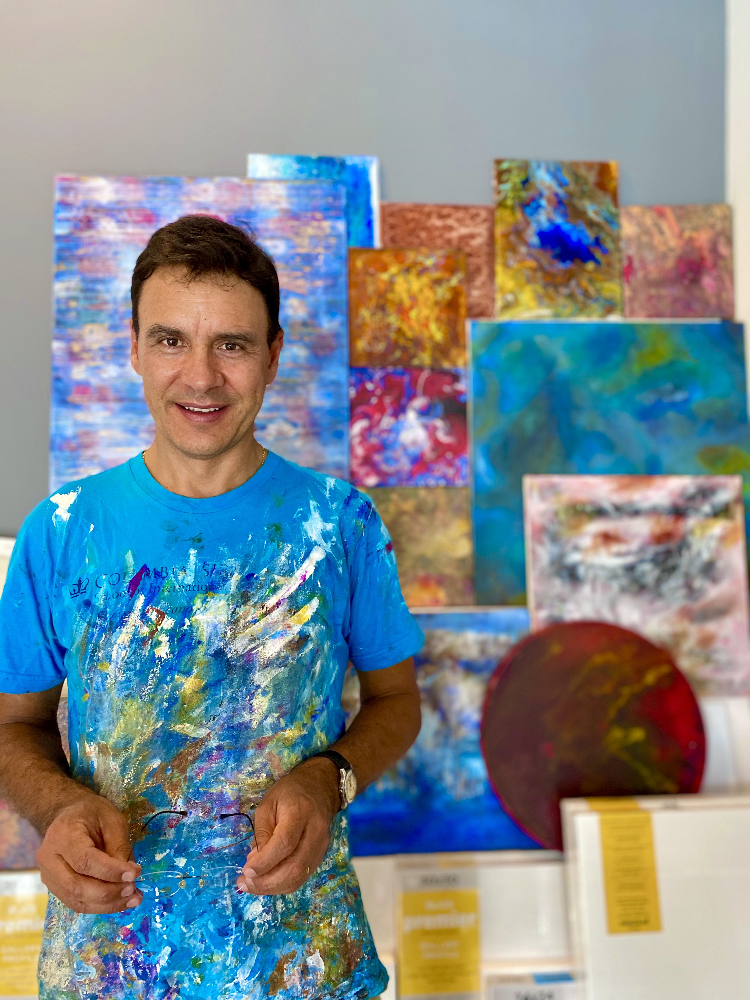
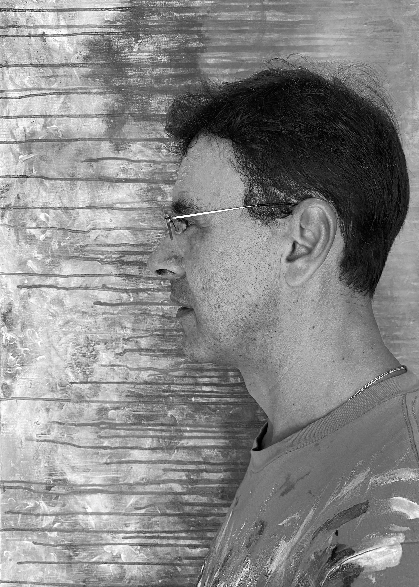

CASOTO

Casoto es un alma libre que disfruta plena y conscientemente de su entorno. Su atención al detalle hace que vea el mundo con profundidad y conciencia en vez de verlo con fugacidad.
Su creación es un proceso de goce y exploración. Se encierra en su estudio, escoge un artista o grupo musical y lo escucha a todo volumen para ser fuente de inspiración. Música con historia, contenido social y recuerdos.
Durante días interactúa con la pieza, la deja, reflexiona, imagina, vuelve, experimenta, fluye... El resultado: un proceso de goce, reflexión e introspección.

Para Casoto compartir su arte es un placer, es su manera de decir gracias y construir cadenas de afecto. Durante años ha creado arte para las personas que significan mucho en su vida. También, cuando viaja y conoce nuevas personas les deja una pieza de arte. Esta es el reflejo del tiempo compartido, de lo que le ha generado el lugar, de sus diferentes experiencias y aventuras, de agradecimiento y entrega.
Su arte tiene emoción, sentimientos, vivencias, recuerdos y exploración. Cada pieza tiene una historia y va mucho más allá de trazar sobre un lienzo; es ponerse a si mismo y lo que está viviendo para plasmarlo en él cobrando vida propia.
Con el proyecto D-art, Casoto quiere que al aportar sus cuadros se tenga un impacto social. El poder entregar su obra a alguien que va a apoyar una causa social es el significado de la etapa que desea que su arte siga.